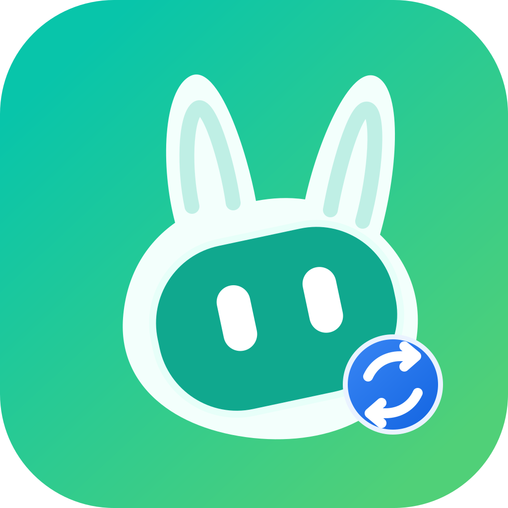

01 / ACCOUNT SWITCHING
账号卡片，一眼识别
昵称、账号类型、订阅类型和剩余积分都来自 WorkBuddy 当前数据。卡片配色按账号固定，下次启动仍然保持一致。

BuddyKitWORKBUDDY DESKTOP COMPANION
BuddyKit 是一个简洁的本地桌面工具。保存多个 WorkBuddy 登录状态，点击账号卡片切换；本地会话归属跟随当前账号，云端会话保持不动。
v0.1.0 · macOS · Windows/本地运行，不启动本地服务
通过浏览器授权 WorkBuddy 账号，之后可以快速切换。
BuddyKit 只保留账号切换真正需要的部分：浏览器 OAuth 授权、账号卡片、稳定的本地会话归属和清晰的用量统计。没有设置页，没有会话管理页，也不启动本地 HTTP/WebSocket 服务。
昵称、账号类型、订阅类型和剩余积分都来自 WorkBuddy 当前数据。卡片配色按账号固定，下次启动仍然保持一致。
切换时 WorkBuddy 会被可靠地重启，本地会话原地归属到目标账号；云端会话不被复制、不被改动。
每日看板展示真实的积分和 Token 用量，可悬浮查看某一天的精确数量，并支持切换月份。
点击“添加账号”后唤起 WorkBuddy 官方授权页。验证完成，BuddyKit 读取账号信息并生成卡片，不需要手动输入账号名。
下面的内容与桌面程序中的账号页和统计页保持一致，展示的是 BuddyKit 已实现的交互，不是概念图。
积分和 Token 的本地用量趋势。
账号快照在本地以 AES-GCM 加密保存。BuddyKit 不使用系统钥匙串，不启动本地服务，不上传账号列表；授权环节由 WorkBuddy 官方浏览器页面完成。
了解项目结构 ↗本地会话原地更新归属，云端内容保持不动。
密钥存于 BuddyKit 私有应用数据目录。
WorkBuddy 重启后再应用新的登录状态。
当前版本 v0.1.0 · macOS 和 Windows